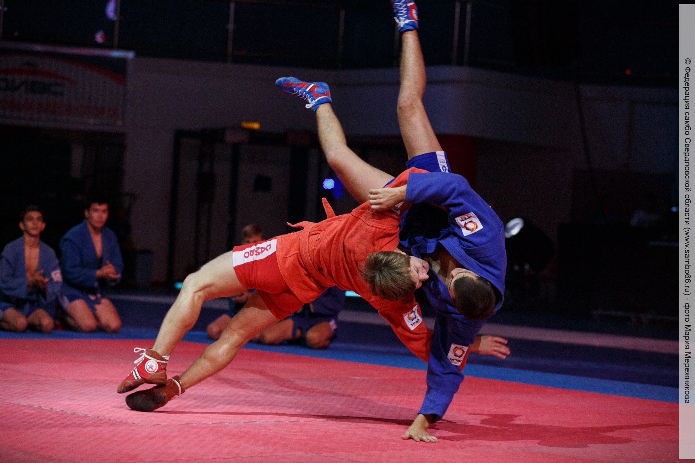
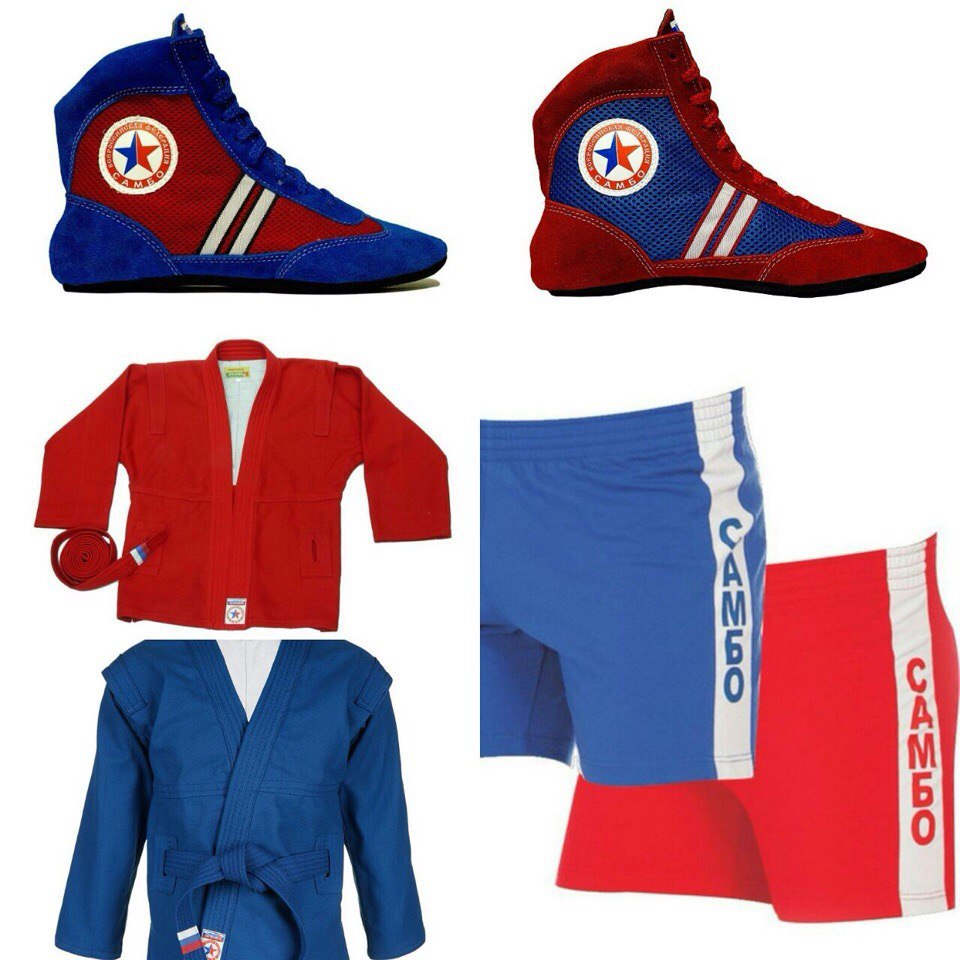

история самбо Са́мбо (акроним — самозащита без оружия) — советский, а с 1966 года —
международный вид спортивного и прикладного единоборства, разработанный в 1920—1930
годах на основе борьбы дзюдо, джиу-джитсу
под руководством Василия Ощепкова, Виктора Спиридонова и Анатолия Харлампиева.
После признания самбо ФИЛА в 1966 году и включения его с 1973 года в
программу чемпионата мира по борьбе наравне с классической и вольной борьбой (с 1977 в программу
Панамериканского чемпионата по борьбе, с 1983 в программу Панамериканских игр), на волне беспрецедентной международной популярности в середине 1970-х годов самбо
стремительно приближалось ко включению его на правах олимпийского вида спорта в программу летних Олимпийских игр с 1980 года[1].
Однако в результате политических затруднений, вызванных бойкотом Олимпиады-80, самбо было понижено в международном олимпийском статусе до демонстрационного спорта,
а затем и статус демонстрационного спорта был аннулирован МОК.
20 июля 2021 года Международный олимпийский комитет (МОК) впервые признал самбо олимпийским видом спорта. Такое решение приняли на сессии МОК в Токио (Япония)
накануне Олимпийских игр-2020 (они прошли в 2021 году).
>>
Форма участника соревнований по самбо включает:
костюм самбо (куртка и шорты). Цвет костюма — красный или синий;
ботинки самбо. Цвет ботинок — красный, синий, комбинированный.
правила
В соревнованиях по самбо предусмотрено семь возрастных групп, представленных в таблице.[7]
Группа Возраст
Подростки младшего возраста 11—12 лет
Подростки старшего возраста 13—14 лет
Кадеты 15—16 лет
Юноши 17—18 лет
Юниоры 19—20 лет
Взрослые 18 лет и старше
Мастера 35 лет и старше
основные правила
В самбо разрешается применять броски, удержания и болевые приёмы на руки и ноги.
Броски можно проводить с помощью рук, ног и туловища.
В самбо баллы присуждаются за броски и удержания.
При удержании самбист, прижимаясь к сопернику любой частью туловища, удерживает его в этом положении в течение 20 секунд.
Самбист может победить досрочно, если выполнит бросок соперника на спину, оставаясь в стойке, проведет болевой прием, наберет на 8 баллов больше соперника.
Болевым приёмом является техническое действие в борьбе лёжа, вынуждающее соперника сдаться.
В самбо разрешается проводить рычаги, узлы, ущемления суставов и мышц на руках и ногах соперника.
Время схватки — 3–5 минут чистого времени.
>4 балла присуждается:
за бросок соперника на спину с падением атакующего;
за бросок соперника на бок без падения атакующего;
за удержание в течение 20 секунд.
2 балла присуждаются:
за бросок соперника на бок с падением атакующего;
за бросок на грудь, плечо, живот, таз без падения атакующего;
за удержание в течение 10 секунд
1 балл присуждается:
за бросок соперника на грудь, плечо, живот, таз с падением атакующего.
Боевое самбо
>
Форма участника соревнований по самбо включает:
костюм самбо (куртка и шорты). Цвет костюма — красный или синий;
ботинки самбо. Цвет ботинок — красный, синий, комбинированный.
защитное снаряжение. Цвет снаряжения — как цвет костюма.
>Боевое самбо – уникальная система самозащиты, выработанная в реальной боевой деятельности,
универсальная по вариативности элементов техники, специфике педагогического подхода к обучению и
подготовке психики. Боевое самбо – это международно признанный вид спорта, созданный в России,
объединяющий лучшие достижения мировой культуры в области боевых искусств, наиболее эффективный вид
подготовки к военной и правоохранительной деятельности в современных условиях.
Возрастная группа Возраст
Юноши 16-18 лет
Юниоры 18-20 лет
Мужчины 20 и старше
ИСТОРИЯ
щё до первой мировой войны знаменитый русский борец,
«профессор атлетики» Иван Владимирович Лебедев (1879-1950) разработал специальный курс подготовки полицейских,
который в 1914 году полностью прошли 30 околоточных надзирателей и городовых, получивших дипломы инструкторов.
О боевом самбо, как российской и системе подготовки универсального бойца, стало известно в марте 1915 года,
в момент публикации книги И.В. Лебедева «Самозащита и арест».В 20-е годы работу Лебедева продолжили Спиридонов,
Короновский, Ознобишин, Яковлев, Солоневич.
Созданное в 1923 году в Москве общество «Динамо», объединившее спортсменов-чекистов, пограничников и милиционеров,
взяло этот труд на себя. Секцией по изучению и разработке прикладных приёмов руководил Виктор Афанасьевич Спиридонов
(1883-1943). Под его руководством были разработаны программы для специальных курсов самозащиты и боевой раздел.
Спиридонов хорошо знал японскую систему джиу-джитсу и дополнил комплекс Лебедева её лучшими приёмами.
Удары были позаимствованы им из английского бокса, захваты и броски из французской и других видов борьбы.
В боевое самбо вошёл исключительный по своему богатству арсенал приёмов из множества отечественных и зарубежных боевых искусств.
ПРАВИЛА
В боевом самбо разрешается проводить атакующие и защитные действия в определённых положениях спортсменов:
удары;
броски;
удержания;
болевые приёмы;
удушающие приёмы и защиты от них.
Продолжительность схватки в предварительных поединках и встречах за медали устанавливается для:
мужчин, юниоров (18–20 лет) — 5 минут;
юношей (16–18 лет) — 4 минуты.
Продолжительность утешительных поединков составляет 3 минуты.
 >
>